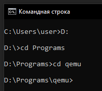
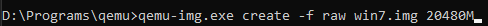
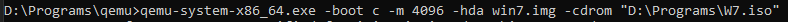
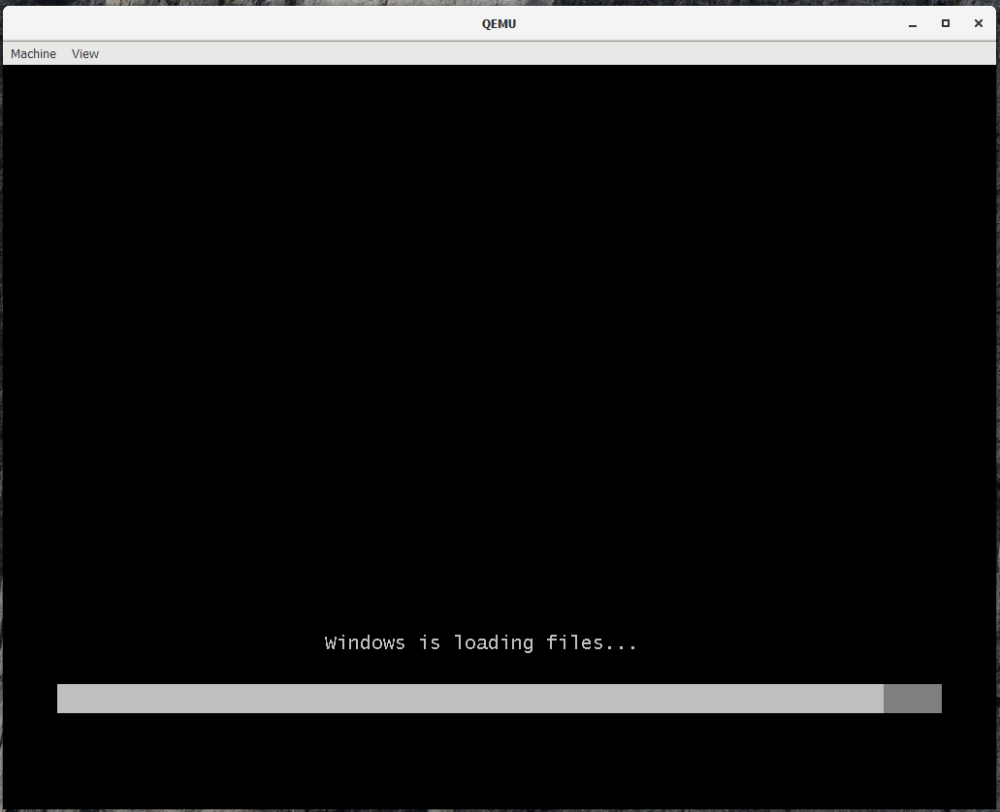
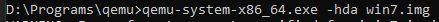

QEMU – это программа с открытым исходным кодом для разных платформ, которая позволяет создавать и оперировать с операционными средами. Разработчиком данного программного обеспечения является Fabrice Bellard.
Инсталляция не представляет собой ничего сложного – скачайте программу и запустите установщик. Следуйте простым инструкциям и дождитесь завершения процесса. К сожалению, после этого у вас не появится никакого ярлыка, и программа не откроется сама, так как она не имеет графического интерфейса, поэтому оперировать с приложением придётся через командную строку.
Открываем командную строку (cmd.exe), набрав в поиске «Командная строка». После её открытия необходимо перейти в директорию, где находится сама программа. Это делается командами, представленными на картинке 6.3.1.

Рисунок 6.3.1 – команды для перехода в нужную директорию.
Команда cd «имя директории» позволяет перемещаться между директориями, при помощи cd .. вы можете покинуть данную директорию, для перехода на другой логический диск достаточно указать «D:».
Теперь мы можем перейти к созданию виртуального диска. Для этого необходимо набрать команду (рисунок 6.3.2): qemu-img.exe create -f raw win7.img 20480M, где win7.img — название виртуального диска, а 20480 — его размер в мегабайтах. Размер виртуального диска необходимо подбирать так, чтобы он соответствовал требованиям операционной системы.

Рисунок 6.3.2 – команда для создания виртуального диска.
Виртуальный диск создан. Теперь на него необходимо установить операционную систему, для этого надо набрать команду (рисунок 6.3.3): qemu-system-x86_64.exe -boot c -m 4096 -hda win7.img -cdrom "D:\Programs\W7.iso". –x86_64 указывает на эмулирование одной из двух архитектур 32-х битной или же 64-х, –boot показывает, что загрузка с диска с названием «с», -m 4096 выделяет ОС 4096 МБ оперативной памяти, –hda win7.img указывает, что система будет устанавливаться в файл-контейнер «win7.img». Cодержимое прямых кавычек после параметра –cdrom представляет собой путь к установочному образу.

Рисунок 6.3.3 – команда для конфигурирования установщика.
Данное действие является заключительным, после этого начнётся стандартная установка операционной системы (рисунок 6.3.4).

Рисунок 6.3.4 – стандартная устновка ОС.
В случае, если вам необходимо открыть установленную виртуальную машину, то необходимо набрать команду (рисунок 6.3.5):

Рисунок 6.3.5 – команда для открытия установленной ОС в QEMU.
В заключении, QEMU – достаточно сложная для обычных пользователей программа, которая вызывает сложности по причине отсутствия графического интерфейса. Для пользователя высокого уровня или системного администратора программа не вызовет никаких сложностей и вовсе покажется гораздо удобнее, так как вся настройка проводится достаточно гибко при помощи команд через консоль.